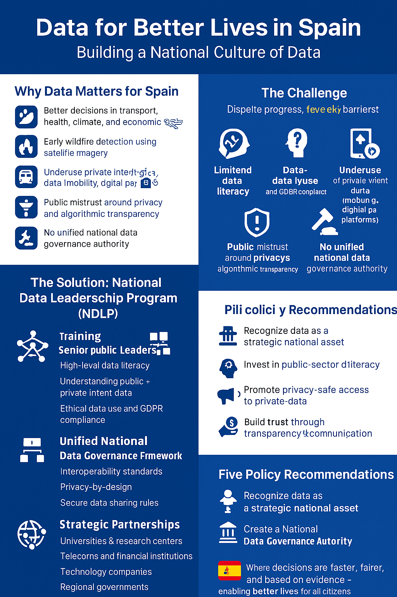

About this project
Sobre este proyecto
This website is a personal, academic proposal that builds on a memo titled “Strengthening Data Literacy Across Senior Public Sector Leadership”. It is inspired by the World Development Report 2021: Data for Better Lives and aims to illustrate how a country could promote a stronger culture of data in its public institutions. It does not represent any official government position.
Esta página es una propuesta personal y académica basada en un memo titulado «Fortalecer la alfabetización en datos del liderazgo del sector público». Se inspira en el Informe sobre el Desarrollo Mundial 2021: Datos para mejorar vidas y busca ilustrar cómo un país podría promover una cultura de datos más sólida en sus instituciones públicas. No representa la posición oficial de ningún gobierno.
If you wish, you can link the full memo here once you upload it, e.g.:
Download the full memo (PDF)
Si lo deseas, puedes enlazar aquí el memo completo una vez lo subas, por ejemplo:
Descargar el memo completo (PDF)
How data is changing the development landscape
Cómo los datos están cambiando el desarrollo
Around the world, data is reshaping how governments design policies, target social programs, manage crises and plan public investment. Public intent data (such as surveys, administrative records and official statistics) and private intent data (from telecoms, platforms and financial services) can be combined to deliver more timely, granular and relevant insights for decision-makers.
En todo el mundo, los datos están transformando la forma en que los gobiernos diseñan políticas, orientan programas sociales, gestionan crisis y planifican la inversión pública. Los datos de intención pública (encuestas, registros administrativos, estadísticas oficiales) y los datos de intención privada (de telecomunicaciones, plataformas y servicios financieros) pueden combinarse para ofrecer información más oportuna, granular y relevante para la toma de decisiones.
However, these benefits only materialize when senior leadership understands what data exists, how reliable it is, and how to use it responsibly. Without that, even the best datasets remain underused, and policy decisions continue to rely on intuition or outdated information.
Sin embargo, estos beneficios sólo se materializan cuando el liderazgo de alto nivel entiende qué datos existen, cuán fiables son y cómo utilizarlos de forma responsable. De lo contrario, incluso los mejores conjuntos de datos quedan infrautilizados y las decisiones de política siguen basándose en la intuición o en información desactualizada.
Visual summary: Data for Better Lives
Resumen visual: Datos para mejorar vidas
The infographic below offers a simple visual summary of why data matters for development and how a National Data Leadership Program could help build a stronger data culture in government.
La infografía siguiente ofrece un resumen visual sencillo sobre por qué los datos importan para el desarrollo y cómo un Programa Nacional de Liderazgo en Datos podría ayudar a construir una cultura de datos más sólida en el sector público.

Core proposal: National Data Leadership Program
Propuesta central: Programa Nacional de Liderazgo en Datos
The memo and this digital artifact propose the creation of a National Data Leadership Program (NDLP), designed to strengthen data literacy and strategic use of data across all senior levels of government.
El memo y este artefacto digital proponen la creación de un Programa Nacional de Liderazgo en Datos (PNLD), destinado a reforzar la alfabetización en datos y su uso estratégico en todos los niveles superiores del gobierno.
- Leadership training: modular, high-level training on data governance, public vs. private intent data, and ethical use.
- Government Data Council: a senior body to coordinate data reforms and encourage cross-ministerial collaboration.
- Mandatory data briefings: key policies and investments must include a data-driven justification.
- Enabling environment: improved infrastructure, clear data-sharing rules, and strong privacy/cybersecurity frameworks.
- Partnerships: collaboration with universities and private-sector data holders to build capacity and test real use cases.
- Formación del liderazgo: capacitación modular de alto nivel sobre gobernanza de datos, datos de intención pública y privada, y uso ético.
- Consejo de Datos del Gobierno: órgano de alto nivel para coordinar reformas de datos y fomentar la colaboración interministerial.
- Informes de datos obligatorios: las políticas e inversiones clave deben incluir una justificación basada en datos.
- Entorno habilitante: mejor infraestructura, reglas claras de intercambio de datos y marcos sólidos de privacidad y ciberseguridad.
- Alianzas: colaboración con universidades y sector privado para desarrollar capacidades y probar casos de uso reales.
Further reading: World Development Report 2021
Para saber más: Informe sobre el Desarrollo Mundial 2021
This proposal is inspired by the World Development Report 2021: Data for Better Lives, which explores how countries can harness data for development while protecting people from harm. You can read the report and explore its data stories here:
Esta propuesta se inspira en el Informe sobre el Desarrollo Mundial 2021: Datos para mejorar vidas, que analiza cómo los países pueden aprovechar los datos para el desarrollo protegiendo al mismo tiempo a las personas frente a posibles daños. Puedes consultar el informe y sus historias de datos aquí:
World Development Report 2021: Data for Better Lives
WDR 2021 interactive website